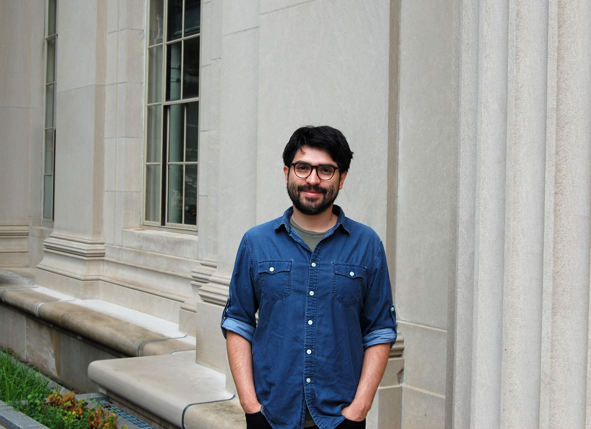

I am an Associate Professor (UHD-2) in the Mathematics of Computational Science (MACS) group within the Department of Applied Mathematics at the University of Twente.My research lies at the intersection of scientific computing, numerical analysis, and mathematical physics. A distinguishing feature of my work is the integration of analytical tools — including potential theory, complex analysis, and asymptotic methods — with the design of high-order, computationally efficient numerical methods. My approach aims at exploiting the mathematical structure of the underlying equations to develop methods that are both analytically driven and highly performant in practice. A central theme is the design of integral equation formulations and associated discretizations for acoustic and electromagnetic scattering problems in complex geometrical settings, including multiply layered media, periodic structures, and open waveguides. Applications of my research include computational photonics and inverse design. Further details are available below or in my curriculum vitae.
Prior to joining the University of Twente, I held a faculty position at the Institute for Mathematical and Computational Engineering at Pontificia Universidad Católica de Chile (PUC). Before that, I served as an Instructor in Applied Mathematics at the Massachusetts Institute of Technology (MIT), Department of Mathematics.
I received my Ph.D. in Applied and Computational Mathematics from the California Institute of Technology (Caltech) in 2016, under the supervision of Professor Oscar P. Bruno. Prior to that, I completed a Bachelor's degree and a Master's degree in Mathematical Engineering at PUC, supported by the Premio Padre Alberto Hurtado and a CONICYT fellowship, respectively.
(publications marked with '+' are with mentored students; publications marked with '*' have authors listed in alphabetical order)
*31. C. Pérez-Arancibia and C. Turc, Maxwell à la Helmholtz: Direct boundary integral equations for 3D scattering by perfect electric conductors via Helmholtz operators, Submitted, 2026.
*30. Y. Tan, C. Pérez-Arancibia, and T. Yin, A uniformly high-accuracy PML-BIE method for scattering by periodic arrays of obstacles: The 2D case, Submitted, 2026.
*29. L. M. Faria, C. Pérez-Arancibia, and S. Tlupova, High-order kernel regularization of singular and hypersingular Helmholtz boundary integral operators, Submitted, 2026.
+*28. J. Burbano-Gallegos, C. Pérez-Arancibia, and C. Turc, Maxwell à la Helmholtz: Electromagnetic scattering by 3D perfect electric conductors via Helmholtz integral operators, ESAIM: Mathematical Modelling and Numerical Analysis, 60(1):273–315, 2026.
+27. V. Hojas, C. Pérez-Arancibia, and M. A. Sánchez, Reflectionless discrete perfectly matched layers for higher-order finite difference schemes, SIAM Journal on Scientific Computing, 46(5), 2024.
*26. T. G. Anderson, M. Bonnet, L. Faria, and C. Pérez-Arancibia, Fast, high-order numerical evaluation of volume potentials via polynomial density interpolation, Journal of Computational Physics, 511, 2024.
*25. A.-S. Bonnet-Ben Dhia, L. Faria, and C. Pérez-Arancibia, A complex-scaled boundary integral equation for time-harmonic water waves, SIAM Journal on Applied Mathematics, 8(4), 2024.
*24. T. G. Anderson, M. Bonnet, L. Faria, and C. Pérez-Arancibia, Construction of polynomial particular solutions of linear constant-coefficient partial differential equations, Computer and Mathematics with Applications, 162, 2024.
*23. L. Faria, C. Pérez-Arancibia, and C. Turc, Combined field-only boundary integral equations for PEC electromagnetic scattering problem in spherical geometries, SIAM Journal on Applied Mathematics, 84(1), 2024.
+22. R. Strauszer, L. Faria, A. Fernandez, and C. Pérez-Arancibia, Windowed Green function method for wave scattering by periodic arrays of 2D obstacles, Studies in Applied Mathematics, 150(1):277-315, 2023.
+21. R. Arrieta and C. Pérez-Arancibia, Windowed Green function MoM for second-kind surface integral equation formulations of layered media electromagnetic scattering problems, IEEE Transactions on Antennas and Propagation, 70(12):11978-11989, 2022.
20. L. Faria, C. Pérez-Arancibia, and M. Bonnet, General-purpose kernel regularization of boundary integral equations via density interpolation, Computer Methods in Applied Mechanics and Engineering, 378.113703, 2021.
+19. V. Gómez and C. Pérez-Arancibia, On the regularization of Cauchy-type integral operators via the density interpolation method and applications. Computer and Mathematics with Applications, 87:107-119, 2021.
18. C. Pérez-Arancibia, C. Turc, L. Faria, and C. Sideris, Planewave density interpolation methods for the EFIE on simple and composite surfaces, IEEE Transactions on Antennas and Propagation, 69(1):317-331, 2021.
*17. D. Nicholls, C. Pérez-Arancibia and C. Turc, Sweeping preconditioners for the iterative solution of quasiperiodic Helmholtz transmission problems in layered media, Journal of Scientific Computing, 82(44):1-45, 2020.
+16. I. Labarca, L. Faria and C. Pérez-Arancibia, Convolution quadrature methods for time-domain scattering from unbounded penetrable interfaces, Proceedings of the Royal Society A: Mathematical, Physical and Engineering Sciences, 2019.0029, 2019.
15. C. Pérez-Arancibia, C. Turc and L. Faria, Planewave density interpolation methods for 3D Helmholtz boundary integral equations, SIAM Journal on Scientific Computing, 41(4):A2065-A2087, 2019.
*14. C. Pérez-Arancibia, S. Shipman, C. Turc and S. Venakides, Domain decomposition for quasi-periodic scattering by layered media via robust boundary-integral equations at all frequencies, Communications in Computational Physics, 26:265-310, 2019.
13. C. Pérez-Arancibia, L. Faria and C. Turc, Harmonic density interpolation methods for high-order evaluation of Laplace layer potentials in 2D and 3D, Journal of Computational Physics, 376:411-434, 2019.
12. R. Pestourie, C. Pérez-Arancibia, Z. Lin, W. Shin, F. Capasso and S. G. Johnson, Inverse design of large-area metasurfaces, Optics Express, 26(23), 2018.
11. C. Pérez-Arancibia, R. Pestourie and S. G. Johnson, Sideways adiabaticity: beyond ray optics for slowly varying metasurfaces, Optics Express, 26(23):335299, 2018.
10. C. Pérez-Arancibia, E. Godoy and M. Durán, Modeling and simulation of an acoustic well stimulation method, Wave Motion, 77: 214-228, 2018.
9. C. Pérez-Arancibia, A plane-wave singularity subtraction technique for the classical Dirichlet and Neumann combined field integral equations, Applied Numerical Mathematics, 123:221-240, 2018.
*8. C. Jerez-Hanckes, C. Pérez-Arancibia and C. Turc, Multitrace/singletrace formulations and Domain Decomposition Methods for the solution of Helmholtz transmission problems for bounded composite scatterers, Journal of Computational Physics, 350:343-360, 2017.
*7. O. P. Bruno, E. Garza-Gonzalez and C. Pérez-Arancibia, Windowed Green Function method for nonuniform open-waveguide problems, IEEE Transactions on Antennas and Propagation, 65(9):4684-4692, 2017.
*6. O. P. Bruno and C. Pérez-Arancibia, Windowed Green Function method for the Helmholtz equation in presence of multiply layered media, Proceedings of the Royal Society A: Mathematical, Physical and Egineering Sciences, 473(2202), 2017.
*5. O. P. Bruno, M. Lyon, C. Pérez-Arancibia and C. Turc, Windowed Green Function method for layered-media scattering, SIAM Journal on Applied Mathematics, 76(5):1871–1898, 2016.
4. C. Pérez-Arancibia, P. Zhang, O. P. Bruno and Y. Y. Lau, Electromagnetic power absorption due to bumps and trenches on flat surfaces, Journal of Applied Physics, 16(124904), 2014.
3. C. Pérez-Arancibia and O. P. Bruno, High-order integral equation methods for problems of scattering by bumps and cavities on half-planes, Journal of The Optical Society of America A, 31(8):1738-1746, 2014.
2. C. Pérez-Arancibia, P. Ramaciotti, R. Hein and M. Durán, Fast multipole boundary element method for the Laplace equation in a locally perturbed half-plane with a Robin boundary condition, Computer Methods in Applied Mechanics and Engineering, 233(1):152-163, 2012.
1. C. Pérez-Arancibia and M. Durán, On the Green's function for the Helmholtz operator in an impedance circular cylindrical waveguide, Journal of Computational and Applied Mathematics, 235(1):244-262, 2010.
Conference (Peer Reviewed) Papers
7. T. Strauszer-Caussade, L. M. Faria, and C. Pérez-Arancibia. Windowed Green function method for wave scattering by periodic arrays of 2D obstacles. WAVES 2024: The 16th International Conference on Mathematical and Numerical Aspects of Wave Propagation, 30 June–5 July 2024, Berlin, Germany.
6. T. G. Anderson, M. Bonnet, L. M. Faria, and C. Pérez-Arancibia. Fast, provably high-order accurate methods for volume integral operators. WAVES 2024: The 16th International Conference on Mathematical and Numerical Aspects of Wave Propagation, 30 June–5 July 2024, Berlin, Germany.
5. T. G. Anderson, L. M. Faria, and C. Pérez-Arancibia. Solving boundary and volume integral equations with Inti.jl. WAVES 2024: The 16th International Conference on Mathematical and Numerical Aspects of Wave Propagation, 30 June–5 July 2024, Berlin, Germany.
4. L. M. Faria, C. Pérez-Arancibia, and C. Turc. Combined field-only boundary integral equations for electromagnetic scattering. WAVES 2024: The 16th International Conference on Mathematical and Numerical Aspects of Wave Propagation, 30 June–5 July 2024, Berlin, Germany.
3. R. Arrieta, L. Faria, C. Pérez-Arancibia, and C. Turc. A high-order density-interpolation-based Nyström method for three-dimensional electromagnetic boundary integral equations. WAVES 2022: The 15th International Conference on Mathematical and Numerical Aspects of Wave Propagation, July 24–29 2022, Palaiseau, France.
2. J. Hu, E. Garza, C. Pérez-Arancibia, and C. Sideris. High-Order accurate integral equation based mode solver for layered nanophotonic waveguides. International Microwave Symposium, 6–11 June 2021, Atlanta, GA, USA.
1. C. Pérez-Arancibia and O. P. Bruno. A high-order integral equation solver for problems of electromagnetic scat- tering by three-dimensional open surfaces. WAVES 2015: The 12th International Conference on Mathematical and Numerical Aspects of Wave Propagation, 20–24 July 2015, Karlsruhe, Germany.
Theses
C. Pérez-Arancibia, Windowed integral equation methods for problems of scattering by defects and obstacles in layered media. Ph.D. Thesis, California Institute of Technology, August 2016.
C. Pérez-Arancibia, Modeling and simulation of time-harmonic wave propagation in cylindrical impedance guides: Application to an oil well stimulation technology. Master's Thesis, Pontificia Universidad Católica de Chile, May 2010.
Guest Editorials
M. Lucido, K. Kobayashi, A. I. Nosich, C. Pérez-Arancibia, and A. Vukovic, Analytically grounded full-wave methods for advances in computational electromagnetics (theme issue introduction), Philosophical Transactions of the Royal Society A, 383(2303):20240356, 2025.
At UTwente
202400632 Introduction to Partial Differential Equations, 2A, 2025 & 2026, Instructor
202100097 Finite Element Methods: Theory and Applications, 2025 & 2026, Instructor 202200143 Analysis I, 1A, 2022 & 2023, Instructor 202200237 Analysis II, 1B, 2022 & 2023, InstructorAt PUC
MAT2615 Scientific Computing II, 2nd Semester 2020, Instructor
MAT1530 Calculus III, 1st Semester 2020 & 2021, Instructor IMT3130 Applications of Partial Differential Equations and Functional Analysis, 1st Semester 2020 & 2021, Instructor IMT3800 Advanced Topics in Mathematical and Computational Engineering, 2nd Semester 2019, Instructor MAT2605 Scientific Computing I, 2nd Semester 2019, Instructor IMT3500 Capstone Course of Mathematical and Computational Engineering, 2nd Semester 2018, InstructorAt MIT
18.336J/6.335J Fast Methods for Partial Differential and Integral Equations, Fall 2016 & 2017, Instructor
18.303 Linear Partial Differential Equations: Analysis and Numerics, Spring 2018, Instructor 18.03 Differential Equations, Fall 2017, Recitation InstructorAt Caltech
ACM101a Methods of Applied Mathematics (Asymptotic expansions, asymptotic evaluation of integrals, perturbation methods, WKB theory), Fall 2014, TA
ACM101b Methods of Applied Mathematics (Sturm-Liouville theory, Integral equations), Winter 2015, TA ACM106b Introductory Methods of Computational Mathematics (Approximation theory, numerical ODE solvers), Winter 2014, TA ACM95/100b Introductory Methods of Applied Mathematics (Boundary value problems), Winter 2013, TA ACM95/100a Introductory Methods of Applied Mathematics (Complex analysis), Fall 2012 & 2013, TA ACM95/100c Introductory Methods of Applied Mathematics (Partial differential equations), Spring 2013, 2014, & 2015, TA